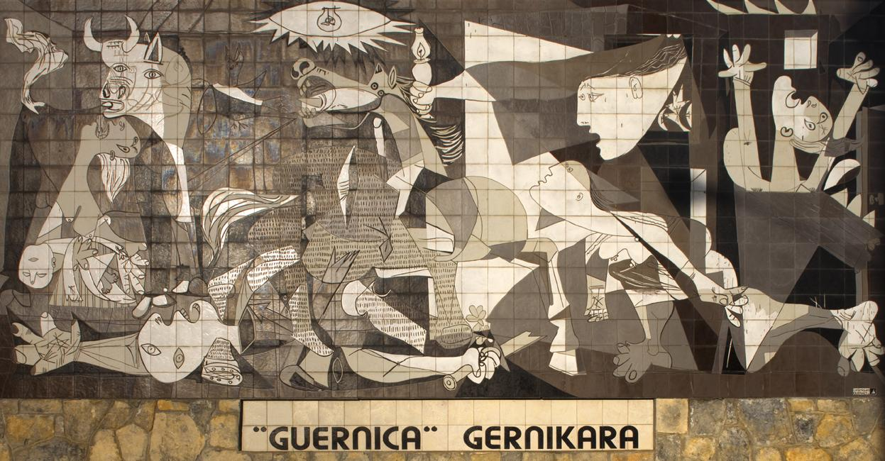

Description
Guernica est une peinture de l'artiste espagnol Pablo Picasso, une de ses œuvres les plus célèbres et un des tableaux les plus connus au monde. Picasso réalise cette huile sur toile de style cubiste entre le 1er mai et le 4 juin 1937, à Paris, en réponse à une commande du gouvernement républicain de Francisco Largo Caballero pour le pavillon espagnol de l'Exposition universelle de Paris de 1937.
Cette toile monumentale est une dénonciation engagée du bombardement de Guernica, qui venait de se produire le 26 avril 1937, lors de la guerre d'Espagne, ordonné par les nationalistes espagnols et exécuté par des troupes allemandes nazies et italiennes fascistes. Le tableau de Picasso, qui fut exposé dans de nombreux pays entre 1937 et 1939, a joué un rôle important dans l'intense émotion suscitée par ce bombardement et par la guerre d'Espagne ; véritable manifeste politique, il a acquis rapidement une grande renommée et une portée politique internationale, devenant un symbole de la dénonciation de la violence franquiste et fasciste, puis de l'horreur de la guerre en général.
Conservée pendant toute la dictature franquiste aux États-Unis, à la demande de Picasso, cette œuvre a été transférée en 1981 en Espagne, où elle est conservée depuis 1992 au musée Reina Sofía à Madrid.
Le gouvernement espagnol républicain de Francisco Largo Caballero envoya en janvier 1937 le directeur général des Beaux-Arts, Josep Renau, demander à Picasso — alors à Paris — de réaliser une peinture murale pour le pavillon espagnol de l'Exposition Internationale de Paris de 1937.